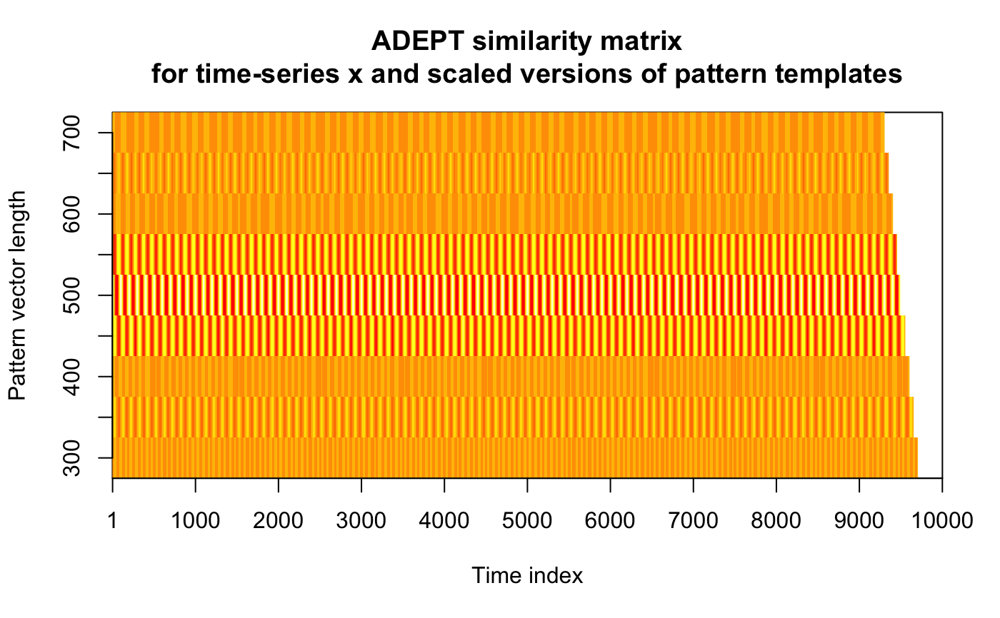

Compute ADEPT similarity matrix between a time-series x and a collection
of scaled templates.
similarityMatrix(x, template.scaled, similarity.measure)
| x | A numeric vector. A time-series |
|---|---|
| template.scaled | A list of lists of numeric vectors, as returned by
|
| similarity.measure | A character scalar. Statistic used in similarity matrix computation; one of the following:
|
A numeric matrix. Contains values of similarity between a time-series x
and scaled templates.
Number of rows equals template.scaled length,
number of columns equals x length.
A particular matrix row consists of similarity statistic
between x and a template rescaled to a particular vector length.
Precisely, each row's element is a maximum out of similarity values
computed for each distinct template used in segmentation.
scaleTemplate {adept}
## Simulate data par(mfrow = c(1,1)) x0 <- sin(seq(0, 2 * pi * 100, length.out = 10000)) x <- x0 + rnorm(1000, sd = 0.1) template <- list(x0[1:500]) template.vl <- seq(300, 700, by = 50) ## Rescale pattern template.scaled <- scaleTemplate(template, template.vl) ## Compute ADEPT similarity matrix out <- similarityMatrix(x, template.scaled, "cov") ## Visualize par(mfrow = c(1,1)) image(t(out), main = "ADEPT similarity matrix\nfor time-series x and scaled versions of pattern templates", xlab = "Time index", ylab = "Pattern vector length", xaxt = "n", yaxt = "n")xaxis <- c(1, seq(1000, length(x0), by = 1000)) yaxis <- template.vl axis(1, at = xaxis/max(xaxis), labels = xaxis)